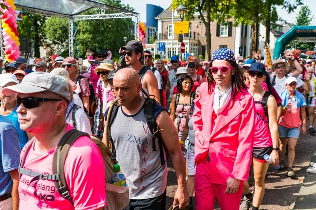

FAQ over de Nijmeegse Vierdaagse: Alle antwoorden
Gepubliceerd op 26 januari 2023, bijgewerkt op 13 mei 2025
Onderdeel van de gids Nijmeegse Vierdaagse

De Nijmeegse Vierdaagse 2025. Het lopen is al een uitdaging, maar waar moet je allemaal nog meer aan denken? Lees hier de meest gestelde vragen over de Nijmeegse Vierdaagse en bereid jezelf voor.

Wie mag er de 30 kilometer lopen met de Vierdaagse?
Als je geboren bent in 1965 of eerder mag je de 30 kilometer lopen. Dit betekent dat je in 2025, 60 jaar of ouder moet zijn voor het lopen van de 30 kilometer van de Nijmeegse Vierdaagse. Ook als je jonger bent en geboren bent in 2008 tot en met 2011, kom je in aanmerking voor de 30 kilometer. Dit geldt voor zowel mannen als vrouwen en je hebt altijd de keus om meer dan 30 kilometer te lopen.
Hoe bereid ik me goed voor op de Vierdaagse?
Het is belangrijk om goed te oefenen met wandelen. Ga veel trainen, kort en lang. Analyseer hoe je loopt, is dit een correcte manier? Zorg dat je een trainingsschema maakt. Dit kan je helpen in het plannen en voorbereiden van je Vierdaagse-avontuur. Als je veel traint, kan je namelijk je lichaam beter leren kennen. Hierdoor vang jij straks tijdens de Vierdaagse de signalen beter op en zorg je dat jij de finish haalt. En natuurlijk is het belangrijk om goede kleding en uitrusting te hebben. Neem laagjes mee en investeer in fijne schoenen.
Wat eet je tijdens de Vierdaagse?
Koolhydraten. Zetmeel, suikers en vezels. Denk aan brood, aardappels, rijst, pasta, erwten en bonen, fruit en verschillende groentes. Omdat je vaak vroeg op moet tijdens de Vierdaagse, is het verstandig om dit zelfs in de avond nog te eten.

Hoeveel kilometer moet je lopen met de Nijmeegse Vierdaagse?
Er zijn drie verschillende afstanden; 30, 40 en 50 kilometer. De meest gebruikelijke afstanden zijn 40 en 50 km. Je moet vier dagen lopen, dus vier maal het aantal kilometer dat je kiest. Als je wilt weten of je in aanmerking komt voor de 30 kilometer, zie dan de vraag en het antwoord hierboven.
Wat kost de Vierdaagse in 2025?
Je inschrijving voor de Nijmeegse Vierdaagse van 2025 kost €120,-. Dit is het inschrijfgeld voor de 107de Vierdaagse.
Kan je ongetraind de Vierdaagse lopen?
Ongetraind de Vierdaagse lopen is niet aan te raden, de kans dat je uitvalt is namelijk een stuk groter.
Is de Vierdaagse moeilijk?
De Vierdaagse lopen doe je niet zomaar. De uitdaging om vier dagen deze afstanden te lopen, zal voor een ongetrainde wandelaar waarschijnlijk zorgen voor diverse wandelblessures. Gelukkig willen de medewandelaars en Vierdaagse-medewerkers allemaal dat jij over de finish komt.

Waar kan ik parkeren tijdens de Vierdaagse?
Het wordt aangeraden om aan de rand van de stad te parkeren bij een P+R gelegenheid. Deze voorzieningen worden tegen de tijd dat de Vierdaagse aanbreekt bekend gemaakt en kan je vinden op de officiële website van de 4Daagse.
Waar kan ik overnachten tijdens de Vierdaagse?
Overnachten in Nijmegen kan op veel verschillende plekken. Zoek je iets goedkoops en tijdelijks of wil je even weg uit de drukte? Je vindt hier de perfecte gelegenheid voor jouw overnachting tijdens de Vierdaagse.
Kan ik als bedrijf meedoen aan de Vierdaagse?
Je kan meedoen als bedrijf. Dan doe je mee als ‘burgergroep’. De groep moet bestaan uit minimaal 11 en maximaal 41 deelnemers. Ook is het van belang dat je tijdens de tocht kan laten zien dat jullie bij elkaar horen, bijvoorbeeld door kleding. Schrijf je in op de officiële website van de 4Daagse.
Waar loop ik langs tijdens de Vierdaagse?
Je loopt langs vele mooie plekken. Je begint met de 1e dag tussen de Waal en Rijn in, bij de Overbetuwe. De 2e dag loop je door het land van Maas en Waal tijdens De Roze Woensdag. Op de 3e dag trotseer je de Zevenheuvelen bij de omgeving van Groesbeek. Op de 4e en laatste dag trek je door Cuijk heen en kom je aan op de Via Gladiola en wordt je ontvangen door Nijmegen en haar inwoners.
Zijn er bepaalde kledingvoorschriften waar je je aan moet houden?
Om goed voorbereid op pad te gaan is het van belang om meerdere kledingstukken mee te nemen of te dragen. Het dragen van verschillende laagjes kleding wordt daarom aangeraden.
Hoe laat start ik tijdens de Vierdaagse?
50km starttijden
04:00-04:30 (individueel en groepen)
40km starttijden
04:45-05:30 / 5:45-6:30 (individueel)
04:30-05:15 (groepen)
30km starttijden
06:45-7:15 / 7:30-8:00 (individueel)
06:30-07:00 (groepen)
Hoe laat moet ik binnen zijn elke dag van de Vierdaagse?
Tussen 12:00 en 18:00 kan je je afmelden bij een van de afstands-specifieke loketten.
Hoe werkt de start en de finish bij de Vierdaagse?
Wanneer je start, is afhankelijk van de afstand dat je loopt. De 50 kilometer wordt als eerste gestart, daarna de 40 kilometer en als laatste de 30 kilometer.
Bij de finish van de dag laat je je polsbandje scannen bij een registratiebureau dat zich bevindt in de directe omgeving waar je begint of eindigt. De ontvangt dan ook meteen de controlekaart zodat je de volgende dag kan beginnen. Behalve op vrijdag natuurlijk, dan krijg je jouw medaille of cijfertje in de hand gedrukt.